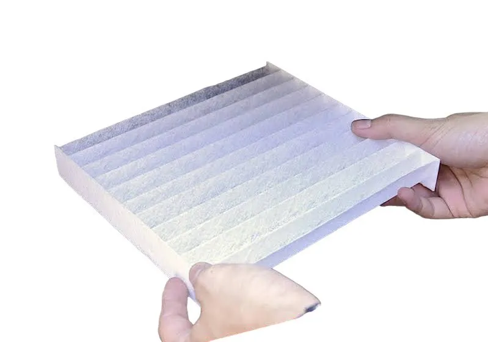

วิธีเปลี่ยนกรองแอร์รถยนต์ด้วยตัวเอง ทำได้ใน 10 นาที ไม่ต้องใช้เครื่องมือพิเศษHow to replace your cabin air filter yourself — done in 10 minutes, no special tools自己動手更換汽車冷氣濾網：10 分鐘完成，不需特殊工具
โดย 724 อินเตอร์ซัพพลาย · By 724 Inter Supply · 724 Inter Supply ·

การเปลี่ยน กรองแอร์รถยนต์ เป็นงานดูแลรถที่ง่ายที่สุดอย่างหนึ่ง รถยนต์นั่งส่วนใหญ่ติดตั้งกรองแอร์ไว้หลังช่องเก็บของหน้าผู้โดยสาร ใช้เวลาไม่ถึง 10 นาทีและแทบไม่ต้องใช้เครื่องมือ
สิ่งที่ต้องเตรียม
- แผ่นกรองแอร์ใหม่ที่ตรงรุ่นและปีของรถ
- ไฟฉาย และผ้าหรือเครื่องดูดฝุ่นขนาดเล็กสำหรับทำความสะอาดช่องกรอง
- ไขควง (บางรุ่นเท่านั้นที่ต้องใช้)
ขั้นตอนเปลี่ยนกรองแอร์รถยนต์
- ดับเครื่องและปิดแอร์ เพื่อไม่ให้พัดลมดูดเศษฝุ่นเข้าไปในระบบระหว่างเปลี่ยน
- เปิดช่องเก็บของหน้าผู้โดยสาร นำของออก แล้วปลดตัวล็อกหรือสลักด้านข้างเพื่อให้ช่องเก็บของลดระดับลง (บางรุ่นต้องถอดสายโช้คเล็ก ๆ ด้านขวา)
- ถอดฝาครอบช่องกรองแอร์ ซึ่งมักเป็นฝาพลาสติกสี่เหลี่ยมมีขาล็อกสองข้าง
- ดึงแผ่นกรองเก่าออกช้า ๆ ระวังไม่ให้ฝุ่นและใบไม้ร่วงลงในช่อง สังเกตลูกศรทิศทางลมบนขอบแผ่นเดิมไว้
- ทำความสะอาดช่องกรอง ใช้เครื่องดูดฝุ่นหรือผ้าเช็ดเศษที่ค้างอยู่
- ใส่แผ่นกรองใหม่ให้ลูกศร AIR FLOW ชี้ตามทิศทางลม ส่วนใหญ่ลูกศรจะชี้ลงด้านล่าง ดันเข้าให้สุดโดยไม่ให้แผ่นบิดงอ
- ประกอบฝาครอบและช่องเก็บของกลับ แล้วสตาร์ทเครื่อง เปิดแอร์ลมแรงสุดเพื่อตรวจว่าลมออกปกติและไม่มีเสียงผิดปกติ
ข้อควรระวัง
- ใส่กลับด้าน ทำให้ประสิทธิภาพการกรองลดลง ควรเช็กลูกศรทุกครั้ง
- แผ่นกรองไม่ตรงรุ่น ขนาดที่เล็กเกินจะมีช่องว่างให้ฝุ่นเล็ดลอด ส่วนขนาดใหญ่เกินจะทำให้แผ่นบิดและลมไหลไม่สะดวก
- รถบางรุ่นติดตั้งกรองแอร์ไว้ใต้ฝากระโปรงบริเวณโคนกระจกหน้า หรือใต้คอนโซล หากไม่แน่ใจให้ตรวจสอบคู่มือรถหรือให้ช่างดำเนินการ
แผ่นกรองแอร์รถยนต์ Protect filter ผลิตตรงขนาดตามรุ่นรถ (No common size) โครงแข็งแรงไม่หักงอ ใส่ได้พอดีช่องตั้งแต่ครั้งแรก ค้นหารุ่นที่ตรงกับรถของคุณได้ที่ protectcabinfilter.com
Replacing a cabin air filter is one of the easiest car maintenance jobs. In most passenger cars the filter sits behind the glovebox, takes under 10 minutes to change and needs almost no tools.
What you’ll need
- A new cabin air filter that matches your car’s model and year
- A torch, plus a cloth or small vacuum cleaner to clean the filter housing
- A screwdriver (only some models need one)
Step by step
- Turn off the engine and the A/C so the fan doesn’t pull debris into the system while you work
- Open the glovebox, empty it, then release the side stops or clips so it drops down (some models also have a small damper arm on the right to unhook)
- Remove the filter housing cover, usually a rectangular plastic cover with clips on both sides
- Slide the old filter out slowly so dust and leaves don’t fall into the housing, and note the airflow arrow on its edge
- Clean the housing with a vacuum or cloth to remove any debris
- Insert the new filter with the AIR FLOW arrow pointing the way the air travels — usually downwards — and push it fully in without bending it
- Refit the cover and glovebox, then start the engine and run the fan at full speed to check the airflow is normal and there’s no unusual noise
Things to watch out for
- Fitting it upside down reduces filtration efficiency, so always check the arrow
- A filter that isn’t made for your model leaves gaps for dust if it’s too small, or bends and restricts airflow if it’s too large
- Some models place the filter under the bonnet near the base of the windscreen, or under the console. If you’re unsure, check the owner’s manual or ask a mechanic
Protect filter cabin air filters are made to exact size for each model (no common sizes), with a rigid frame that won’t bend, so they fit perfectly first time. Find the right filter for your car at protectcabinfilter.com
更換汽車冷氣濾網是最簡單的保養工作之一。多數自用車的濾網位於副駕駛置物箱後方，不到 10 分鐘即可完成，幾乎不需要工具。
需要準備
- 符合車型與年份的新冷氣濾網
- 手電筒，以及清潔濾網槽用的抹布或小型吸塵器
- 螺絲起子（僅部分車型需要）
更換步驟
- 熄火並關閉冷氣，避免更換時風扇把雜物吸入系統
- 打開副駕駛置物箱，取出物品後解開兩側卡榫讓置物箱放下（部分車型需先拆下右側的小阻尼桿）
- 拆下濾網槽蓋，通常是兩側有卡扣的長方形塑膠蓋
- 緩緩抽出舊濾網，避免灰塵與落葉掉入槽內，並留意舊濾網邊緣的氣流箭頭方向
- 清潔濾網槽，用吸塵器或抹布清除殘留雜物
- 裝入新濾網，使 AIR FLOW 箭頭指向氣流方向（多數為朝下），完整推入且不要讓濾網彎折
- 裝回槽蓋與置物箱，發動引擎並將風量開到最大，確認出風正常且無異音
注意事項
- 裝反方向會降低過濾效率，每次都要確認箭頭
- 濾網不符車型：太小會留下縫隙讓粉塵通過，太大則會彎折、阻礙氣流
- 部分車型的濾網位於引擎蓋下擋風玻璃底部或中控台下方，若不確定請參考車主手冊或交由技師處理
Protect filter 汽車冷氣濾網依車型精準尺寸製造（No common size），框架堅固不彎折，第一次就能完美貼合。請至 protectcabinfilter.com 查詢適合您車輛的型號。
บทความที่เกี่ยวข้องRelated articles相關文章
กรองแอร์รถยนต์ควรเปลี่ยนเมื่อไหร่? 6 อาการกรองแอร์ตันWhen should you replace your cabin air filter? 6 signs it’s clogged汽車冷氣濾網何時該更換？濾網堵塞的 6 個徵兆
กรองแอร์รถยนต์ กับ กรองอากาศรถยนต์ ต่างกันอย่างไร?Cabin air filter vs engine air filter: what’s the difference?汽車冷氣濾網與空氣濾清器有何不同？
กรองแอร์รถยนต์ยี่ห้อไหนดี? 5 เกณฑ์เลือกให้คุ้มค่าWhich cabin air filter is best? 5 criteria to choose well汽車冷氣濾網哪個牌子好？5 個挑選重點